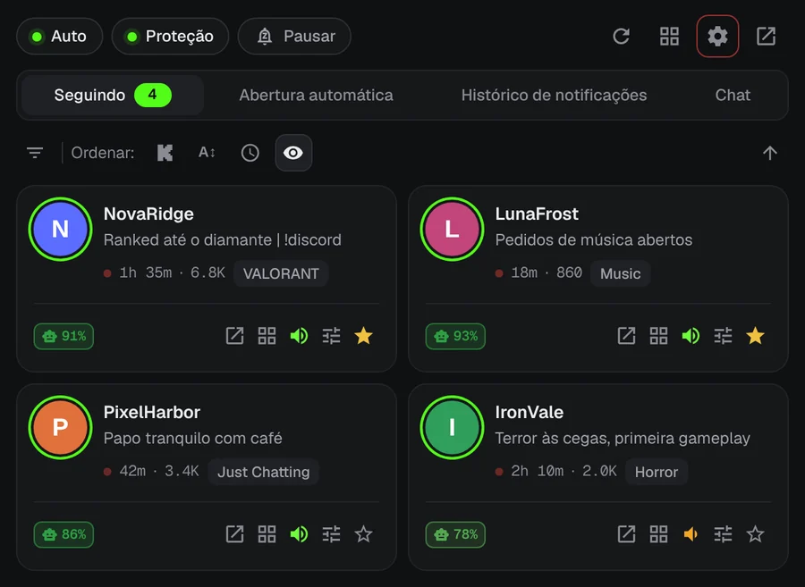
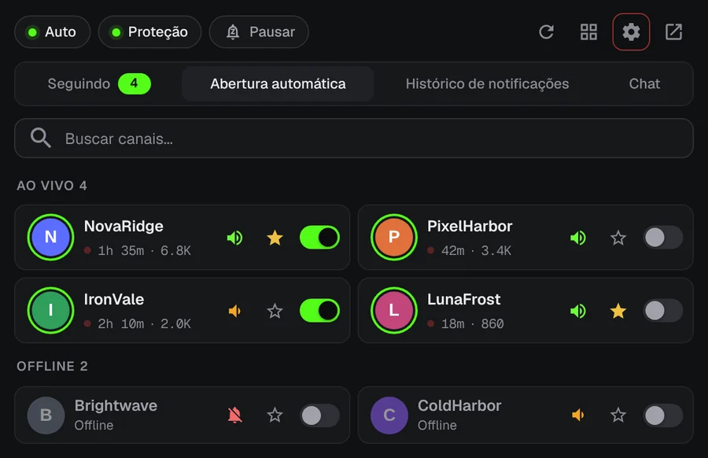
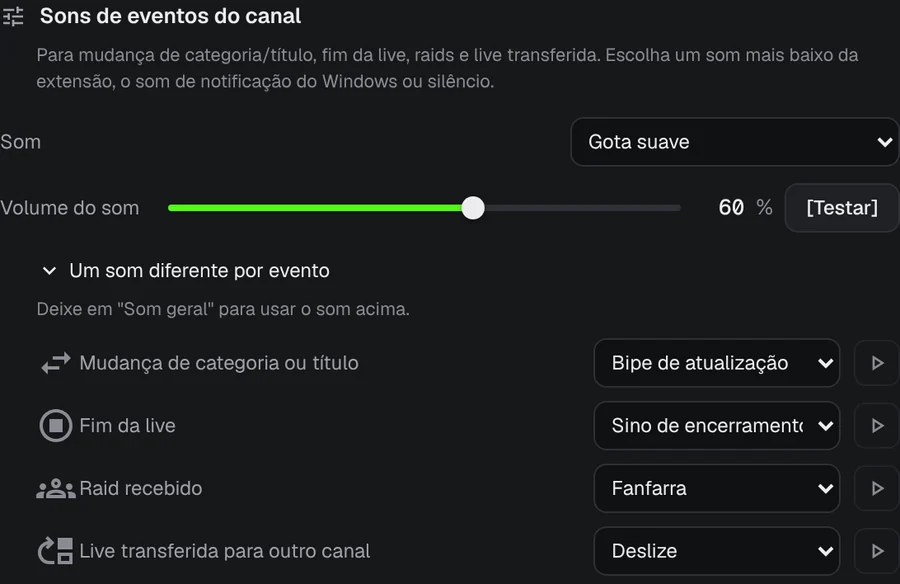
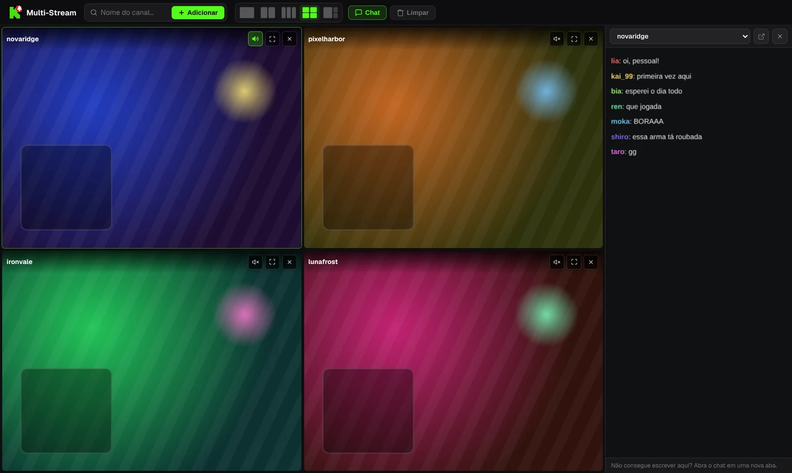

Não perca nenhuma live da Kick.
Seu streamer favorito entra ao vivo às 3 da manhã. O KickAlert manda um aviso na área de trabalho na mesma hora, mesmo sem a Kick aberta. Grátis, sem limite de canais e sem rastreamento.
Em breve no Edge e no Opera
 KickAlert
KickAlertTeste agora. Toque em um sino.
Esses canais estão offline. Ative o sino de um deles e veja o que acontece quando a live começa.
Avisos na hora
O KickAlert usa a conexão em tempo real da Kick, então o aviso chega quando a live começa, não minutos depois. Escolha um som por canal, defina horários de silêncio ou pause tudo até de manhã.

Abertura automática
Escolha quais canais abrem sozinhos. A live abre em uma nova aba assim que começa, sem abas duplicadas, e a aba pode se fechar sozinha se uma raid levar a live para outro canal.

Saiba o que aconteceu
Raids, fim da live, mudanças de categoria e lives transferidas podem ter seu próprio aviso e seu próprio som, canal por canal.

Radar de chat
Receba um aviso quando seu nome ou uma palavra escolhida aparecer em até 5 chats, mesmo com a Kick fechada. Os filtros escondem spam e detectam palavras escritas com letras parecidas.
Até quatro lives em uma aba
As lives começam sem som. Ative o som da que quiser com um clique, com o chat em um painel ao lado.

Imagens meramente ilustrativas.
Seus dados ficam no seu navegador
- Sem coleta de dados de uso e sem rastreamento
- Comunica-se apenas com kick.com
- Cada permissão é explicada na primeira abertura
- Código aberto no GitHub
Perguntas
O KickAlert é grátis?
Sim. Todos os recursos são grátis e não há limite de canais.
Preciso deixar a Kick aberta?
Não. O KickAlert funciona em segundo plano e avisa mesmo sem nenhuma aba da Kick aberta. Basta estar conectado à Kick no mesmo navegador.
Instalei, mas não recebo avisos.
Em uma instalação nova os avisos começam desligados para não lotar sua tela. Ative o sino dos canais que quiser, ou de todos de uma vez nas Configurações. A verificação "Você vai receber notificações deste canal?" nas configurações de cada canal mostra o que mais pode bloquear um aviso.
Em quais navegadores funciona?
Hoje no Chrome e no Firefox, e em breve no Edge e no Opera. Brave, Vivaldi e outros navegadores baseados em Chromium podem instalá-lo pela Chrome Web Store.
Instale o KickAlert
Em breve no Edge e no Opera